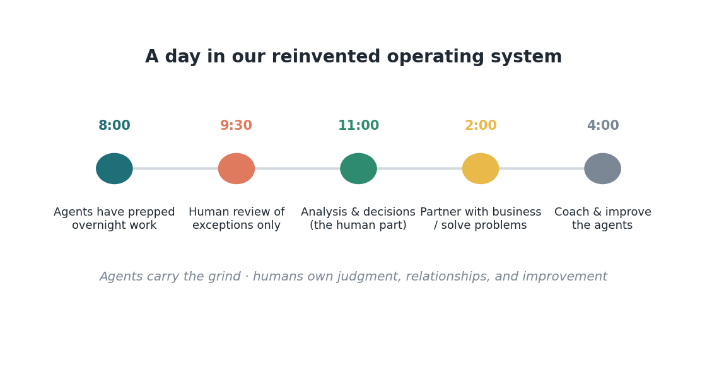
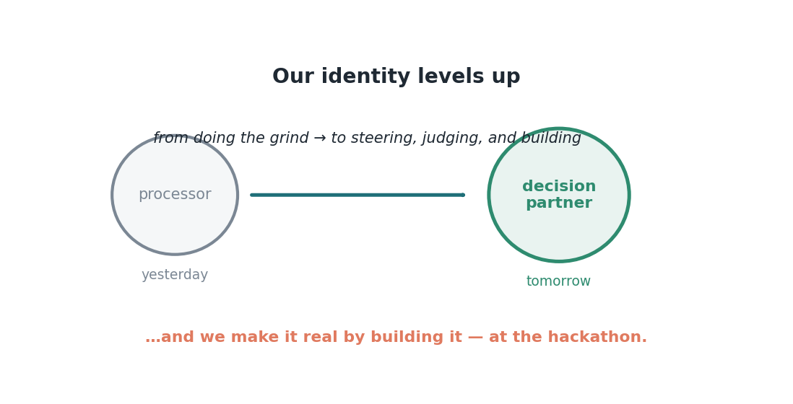

Issue 15 — Imagine it: our finance directorate's new operating system
Let me take you to an ordinary Tuesday in our finance directorate, two years from now. Nothing dramatic happens — that's the point. It isn't science fiction; it's the quiet sum of everything we've discussed across fifteen issues, added up and made real. Walk through it with me.
Sinta arrives at eight, and her agents have already worked overnight: claim statuses checked and sorted, reconciliations tied with a short list of real exceptions, routine accruals drafted, the variance report assembled and flagged — all prepared, none of it posted or sent. She doesn't start behind; she starts with a clear view and the interesting questions already surfaced. By mid-morning she's doing the work that's unmistakably hers: resolving the exceptions the agents couldn't, deciding what a strange variance really means, approving what's right and returning what isn't.
In the afternoon she isn't at her desk at all — she's with a service-line director, helping them understand their numbers and make a better call. That partnership is now the center of her job, not the thing she never had time for. And late in the day she does something her old role didn't contain: she improves her agents, refining how one handles a tricky payer's remittances. Her team has a name for what they've become — decision partners, not processors. The whole department's identity has quietly leveled up.

What hasn't changed is the point.
Notice what's unchanged on this Tuesday. A human still approves everything that matters. The controls are intact — cleaner, even, because every agent action is logged. Sinta is still accountable, still the expert, still the one whose judgment the numbers depend on. The agents didn't replace her; they cleared the underbrush so the real work — thinking, deciding, partnering, improving — could fill her day. She goes home at a reasonable hour, not because she cut corners, but because the corners that used to eat her evenings are handled. And I believe in this Tuesday because every piece of it already exists: we've seen each one, proven, in these issues.
This is the operating system we're growing into, and it's worth being clear-eyed about why it's hopeful rather than threatening. It doesn't shrink us; it up-levels us. It moves us from processing to judging, partnering, and building — into exactly the enduring human skills the evidence says organizations want more of, not less. The fears we named honestly in Issue 8 each have their answer built into this Tuesday: her expertise is more central, not less; she has more control, not less; the unknown has become a place she lives comfortably; and her professional edge has moved up, not away.

But here's the truth the whole series has been walking toward: a vision only becomes real when we build it. So we're going to. This December, Siloam is holding an AI hackathon — a few days where we stop reading about agents and start making them, turning the most annoying parts of our own Tuesdays into the tools that carry them. You don't need to be an engineer. You just need one idea and the willingness to try. Sinta's Tuesday isn't a prediction I'm making to you; it's an invitation I'm extending. The next edition of Finance Forward — the Bridge — is all about how we build it, together. I can't wait to see what you make.
Sources
- Reinvented operating model; skill partnership; measure value not activity — McKinsey, "How to close the agentic adoption gap" (Aug 7, 2026).
- Proof points (cost-to-collect, throughput, close, enduring skills) — Issues 4–12 sources.
- Siloam vision synthesized from Issues 1–14.
Other versions of this issue
Same idea, different angle. Story-led (A) → · Data / ROI-led (B) →